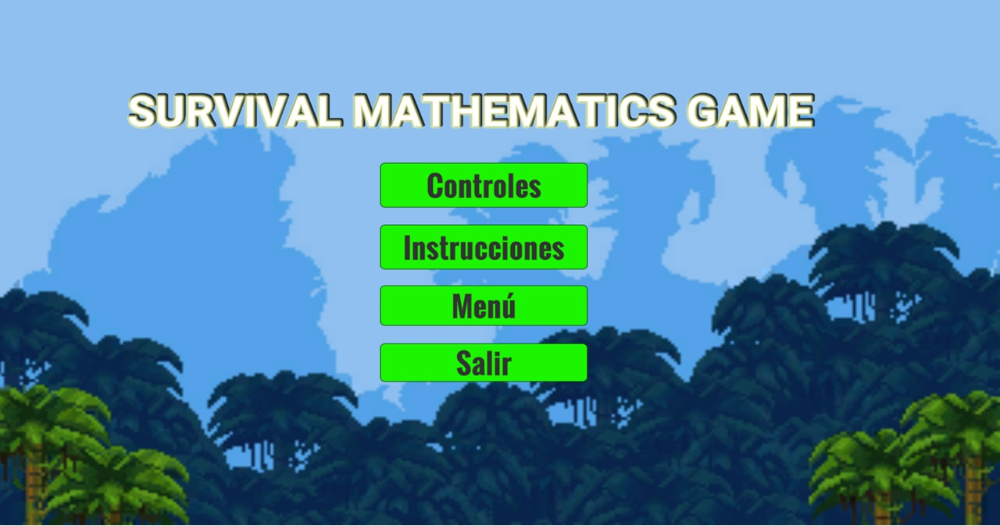
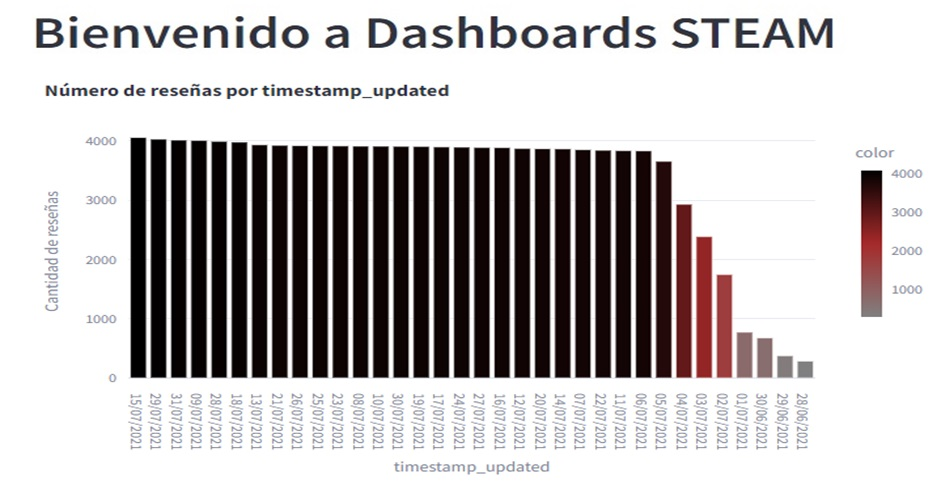
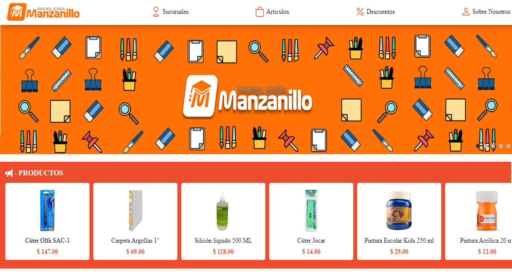
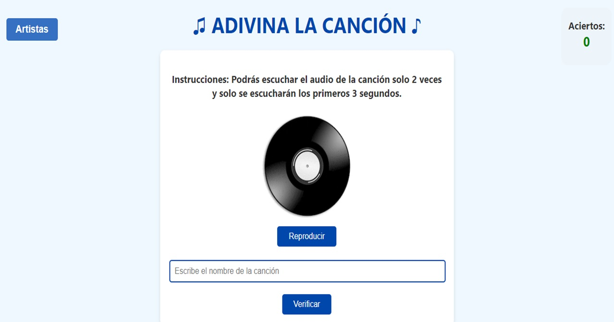
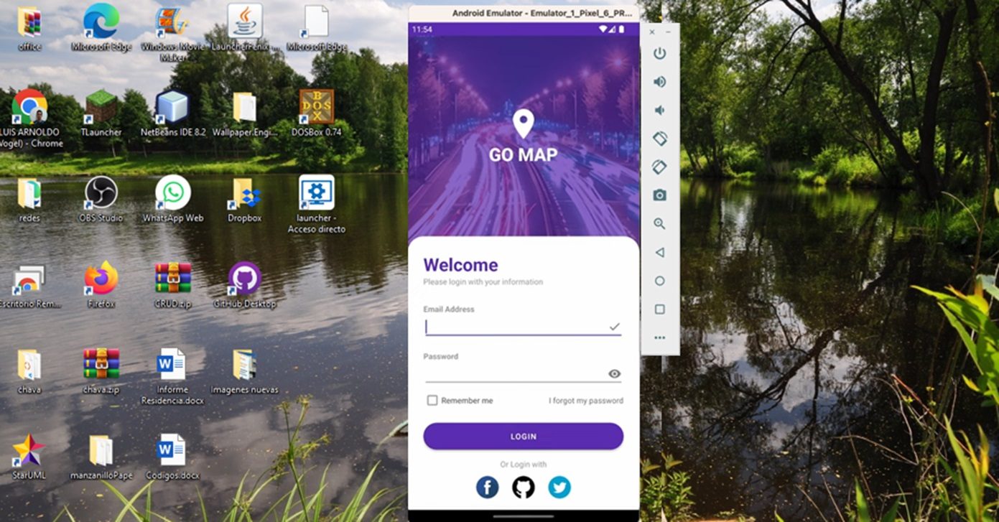

Soy un Ingeniero en Sistemas Computacionales con sólidos conocimientos en programación, gestión de redes, diseño gráfico y herramientas de Office. Mi pasión por aprender y mi habilidad para trabajar en equipo me impulsan a alcanzar la excelencia en cada proyecto.
Me distingo por mi habilidad para trabajar eficazmente en equipo, aprovechando las diferentes opiniones para innovar y resolver problemas de manera eficiente.
Con una mentalidad analítica y metódica, abordo cada desafío con el rigor necesario para desarrollar soluciones innovadoras y efectivas.
Gracias a mi habilidad para comprender profundamente los problemas complejos puedo diseñar estrategias e implementar soluciones que no solo cumplen, sino que superan las expectativas.
Así mismo, valoro mucho la comunicación clara y efectiva como un pilar fundamental de mi práctica profesional.
Mis Proyectos

Desarrollo de un videojuego educativo para adolescentes de 12 a 15 años que enseña de forma entretenida en un ambiente de supervivencia, la resolución de ecuaciones de segundo grado. Está desarrollo en el entorno de Unity 2d. El cual permite fomentar tanto el aprendizaje como la diversión de los distintos usuarios.

Se realizo un Dashboard con datos de Steam Views sobre el juego The Witcher 3, este nos brinda la oportunidad de realizar un análisis sobre los usuarios y sus comportamientos. Para esto, se usarón tecnicas estadísticas y modelos de minería de datos, el cual nos permite obtener resultados precisos.

Desarrollo de una página web innovadora para la
Papelería Manzanillo, donde se utilizarón diversas
tecnologías, con el propósito fundamental de establecer una sólida presencia
en línea, además, se elaboro un inicio de sesión para los empleados junto con un sistema CRUD para gestionar sus productos.
Se presento el diseño web para una empresa de psicología dedicada a la venta de cursos especializados en terapias psicológicas, el diseño que se hizo se penso para poder brindar soluciones efectivas y personalizadas a través del conocimiento y experiencia de los diferentes profesionales que abarca.

Desarrollo de un videojuego web interactivo donde los usuarios pueden poner a prueba sus conocimientos musicales. El juego consiste en escuchar un fragmento de una canción durante 3 segundos y adivinar su título, este proyecto no solo pone a prueba la memoria, sino que ofrece una experiencia divertida.

Desarrollo de una aplicación móvil en Android Studio con un sistema de autenticación de usuarios robusto y seguro. Este sistema de login está diseñado para proporcionar una experiencia de usuario fluida y proteger la información personal de los distintos usuarios que usarán la aplicación móvil.
¡Contáctame!
Gracias por visitar mi portafolio. Si estás interesado en colaborar, tienes alguna pregunta sobre mis proyectos, estaré encantado de escucharte. Cuento con experiencia en desarrollo web, automatización y soluciones innovadoras. Estoy siempre en busca de nuevas oportunidades para aplicar mis conocimientos y contribuir al éxito de proyectos interesantes y desafiantes.
¡Espero con interés trabajar contigo y explorar nuevas oportunidades juntos!.